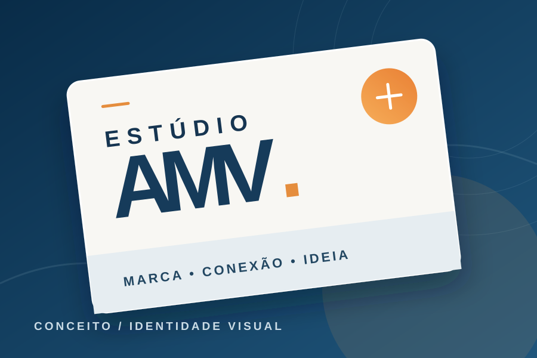
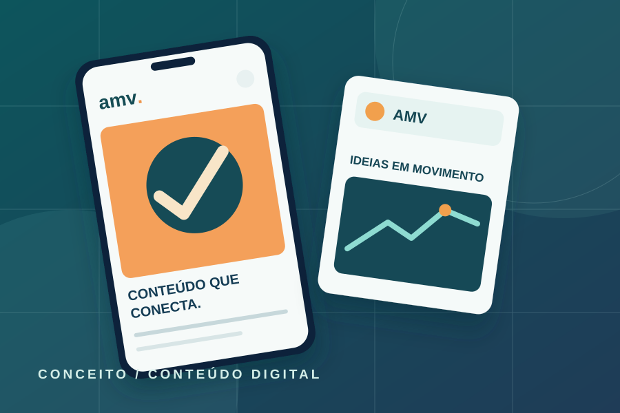

01
Estratégia de Marketing
Planejamento e direcionamento para fortalecer a presença da marca.

Projeto Integrador · SENAC Pinheiro – MA
Conectamos marcas a pessoas e ideias a resultados.
Uma agência experimental de Marketing e Vendas, criada por estudantes do SENAC Pinheiro – MA, conectando aprendizado, criatividade e prática profissional.
Sobre a AMV
A AMV Conectar nasce com o propósito de transformar comunicação em conexão e conexão em resultados.
Unimos estratégia, criatividade e visão de mercado para construir experiências que aproximam marcas e pessoas.
Serviços
Soluções integradas para construir presença, relacionamento e valor em cada ponto de contato.
Planejamento e direcionamento para fortalecer a presença da marca.
Estratégias para ampliar presença, alcance e relacionamento no ambiente digital.
Criação de conteúdos que aproximam marcas e públicos.
Construção de identidade e posicionamento de marca.
Planejamento e estratégias para presença consistente nas redes.
Desenvolvimento de campanhas focadas em comunicação e resultados.
Uma vitrine do processo criativo da AMV. Estes três cartões são modelos de apresentação, prontos para receber trabalhos reais da equipe quando autorizados.

Modelo de apresentação de conceito, aplicações, linguagem e construção de identidade.
Conceito demonstrativo · não é trabalho de clienteExemplo de como mostrar objetivos, pesquisa de público, conceito e peças de campanha.
Conceito demonstrativo · não é trabalho de cliente
Estudo visual de calendário editorial, formatos criativos e estratégia de conteúdo.
Conceito demonstrativo · não é trabalho de clienteNosso diferencial
Uma visão completa transforma cada escolha em parte de uma rota clara para o crescimento.
Decisões orientadas por objetivos.
Ideias que tornam marcas memoráveis.
Comunicação que aproxima marcas e pessoas.
Ações pensadas para gerar valor.
Nosso processo
Uma jornada estratégica e contínua, com cada etapa conectada à próxima.
Conhecer o negócio, público e objetivos.
Definir estratégias e direcionamentos.
Transformar estratégias em ideias e campanhas.
Levar a comunicação até o público certo.
Analisar resultados e aprimorar as estratégias.
Vamos conversar sobre sua marca, seus objetivos e as possibilidades para o próximo passo.
Fale com a AMV ConectarA AMV Conectar é uma experiência coletiva de aprendizagem e desenvolvimento profissional no SENAC Pinheiro – MA.
Um projeto de aprendizagem para transformar ideias em comunicação, estratégia e colaboração.
Diferentes talentos reunidos na construção de soluções e aprendizado coletivo.
Pesquisa, planejamento, conteúdos, vendas e comunicação em um mesmo processo.
Da sala de aula para o mercado: prática pedagógica com transparência.
Contato
Conte um pouco sobre sua marca e o que você deseja construir. Esse pode ser o início de uma grande conexão.
Assistente AMV
Respostas rápidas